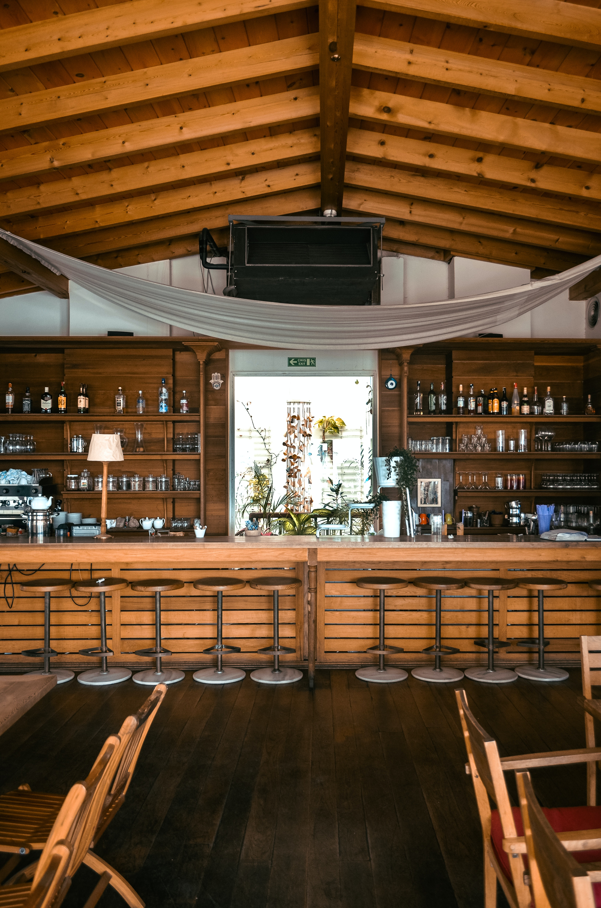

À propos de nous
Joy et ses valeurs
Nous voulons transmettre l’authenticité et le plaisir de consommer des produits locaux car nous invitons au bien manger et à la découverte. Dynamique et ouvert, amoureux de la culture , nous organisons des évènements culturels dans une logique de découverte et de partage. À la belle saison, il est possible de profiter de notre jolie terrasse. En hiver, le rez-de-chaussée et l’étage sont ouverts pour permettre au plus grand nombre de déguster nos plats.
Nos engagements

Notre carte flexivore met à l’honneur les légumes de saison, des viandes, volailles et poissons de qualité. Ferme défenseur du commerce éco conscient, le Joy sélectionne ses produits et fournisseurs avec attention, en priorisant le saisonnier et l’économie locale. Nous adoptons une démarche éco-responsable assumée, que ce soit dans la préparation des plats, des matériaux et objets utilisés pour le restaurant jusqu'au service de table éco-conçu.
Nos partenaires
Nous travaillons main dans la main avec deux fournisseurs locaux très appréciés pour la qualité de leur produits :
J'veux du local